喀纳斯与赛里木湖
游览喀纳斯湖、神仙湾、月亮湾、卧龙湾；赛里木湖自驾环湖，次日二进月亮湾附近漫步。
 2—6 人团
2—6 人团游览喀纳斯湖、神仙湾、月亮湾、卧龙湾；赛里木湖自驾环湖，次日二进月亮湾附近漫步。
禾木与喀纳斯各住一晚景区木屋；另含 3 晚携程五钻与 2 晚携程四钻酒店。
将军山落日缆车、夕阳派对和露天电影；禾木轻旅拍每人 9 张简修照片，含简单民族服饰或配饰、不含妆造，另安排自然森系下午茶。
2 人成行，6 人封顶，1+1 独立座椅七座商务车。乌鲁木齐 24 小时接送机／站，赛湖蓝境穿越视频一团一条。


乌鲁木齐、阿勒泰、赛湖小镇
克拉玛依、返程前乌鲁木齐近大巴扎酒店
禾木与喀纳斯各一晚
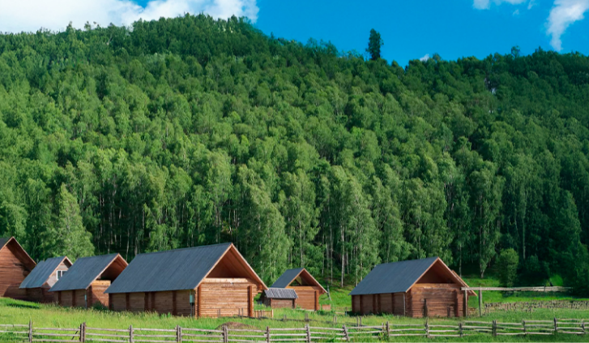
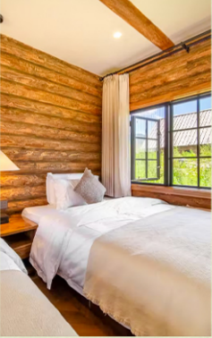
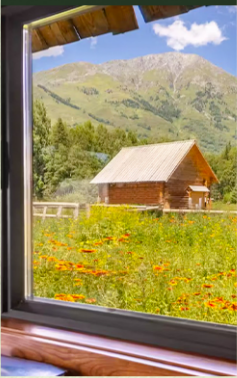
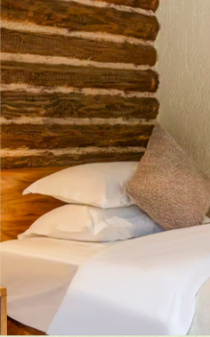
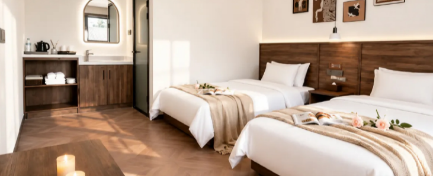
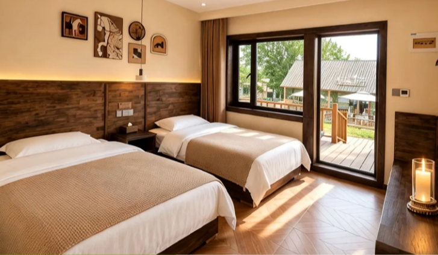
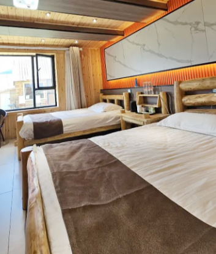
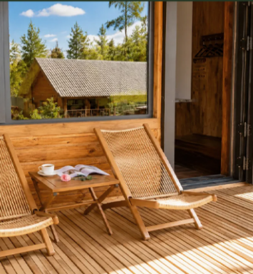
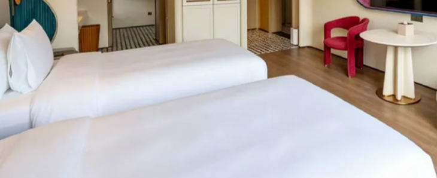
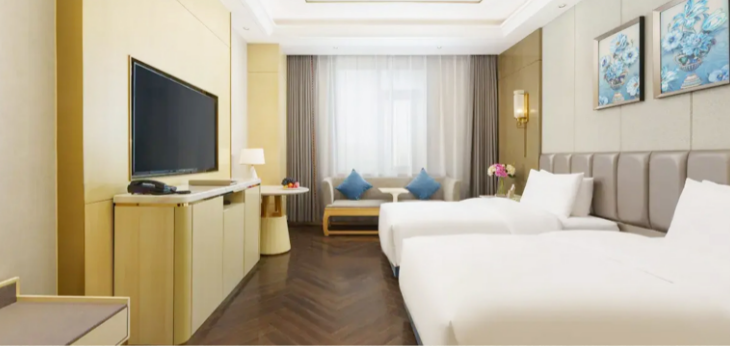
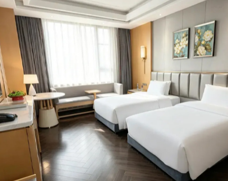
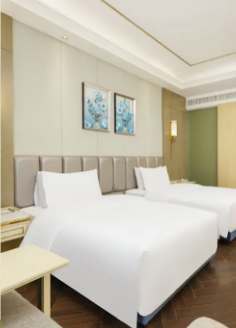
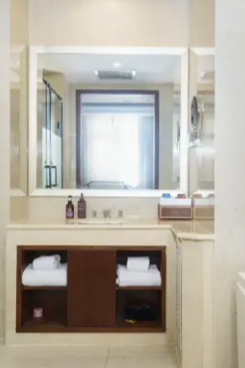
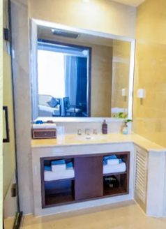
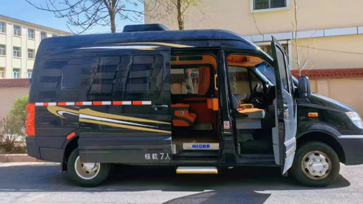
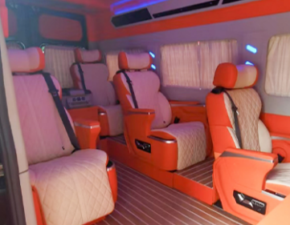
当地行程使用具营运资质的七座商务车，1+1 独立座椅，不指定车型及内饰。司机负责驾驶与行程衔接，不配导游，不提供详细景点讲解；司机食宿由旅行社承担。
乌鲁木齐 24 小时接送机／站，接送不限车型，可能使用普通五座车或普通商务车。拼车旅客每日轮换座位；建议每人携带一个 28 寸以下行李箱，进入禾木和喀纳斯时另备轻便双肩包。
抵达乌鲁木齐机场或火车站，安排 24 小时接机／接站，送往酒店入住休息。管家提前联系，告知次日出发时间、出团信息及注意事项。
酒店通常 14:00 后入住；早到可将行李寄存在前台后自由活动。请携带身份证件，办理入住后检查房间设施。
住：乌鲁木齐 · 携程五钻早餐后沿 S21 沙漠公路穿越古尔班通古特沙漠，游览克拉美丽沙山公园。午餐在服务区自理，继续前往阿勒泰，途中远眺乌伦古湖。
傍晚乘落日缆车登顶将军山，参加夕阳派对、山顶蹦迪与露天电影，结束后前往酒店。活动由景区统一安排；如因天气或景区设备检修等原因无法安排夕阳派对，退费 50 元／人，个人放弃不退费。
参考车程：530 公里 / 6.5 小时早餐后走阿禾公路，途观乌希里克、通巴森林、托勒海特大草原，沿路欣赏峡谷、森林、河流、湿地与草原。阿禾公路开放时安排通行，司机根据可停车路段安排停留。
抵达禾木门票站后换乘区间车进入村落，安排轻摄影旅拍：每人 9 张简修照片，含简单民族服饰或配饰，不含妆造。再享用禾木自然森系下午茶，晚住景区木屋，可在村中自由活动。
阿禾公路如因天气、交通管制等原因关闭，改经布尔津—海流滩绕行前往禾木，无费用可退。旅拍与下午茶为赠送项目，不参加不退费。
参考车程：300 公里 / 5.5 小时早餐自理，上午自由活动。可步行约 40 分钟前往禾木观景台，看村落全景与清晨炊烟；清晨观日出需自行前往，司机不陪同。
中午离开禾木，前往喀纳斯门票站，午餐途中自理。换乘区间车进入喀纳斯湖，在湖边漫步、穿行杉树林；游船属于另付费自选项目。傍晚入住喀纳斯景区木屋。
参考车程：150 公里 / 3.5 小时早餐自理，乘区间车下山游览神仙湾、月亮湾和卧龙湾。可择一段木栈道漫步，观赏河道、沙洲、白桦与云杉。
午餐可在贾登峪自理，之后乘车前往克拉玛依市入住。今日换乘区间车较多，每次下车请检查随身物品；车程较长，可准备适量零食与饮水。
参考车程：570 公里 / 6 小时早餐后出发前往赛里木湖，午餐途中自理。下午自驾环湖，从月亮湾、亲水滩、点将台、西海草原、克勒涌珠、金花紫卉、松树头及网红 S 弯等景点中，精选 3—4 处停留游玩。
安排赛湖蓝境穿越视频，一团一条；天气原因无法安排时，可更换为网红坦克跟车视频。该项目为赠送项目，不参加不退费。环湖结束后入住赛里木湖东门的赛湖小镇五钻酒店。
参考车程：500 公里 / 5.5 小时早餐后二进赛里木湖，在月亮湾附近散步观景。受行驶公里数限制，今日仅安排月亮湾附近游览，不再次环湖。
中午起乘车返回乌鲁木齐，入住近大巴扎的四钻酒店。湖边风大、天气多变，请准备雨具及防风保暖外套。
参考车程：550 公里 / 6.5 小时早餐后根据航班或车次时间安排送机／送站。请提前核对返程交通与接送时间，离开酒店前检查行李及证件。
酒店需在北京时间 14:00 前退房，延迟退房产生的额外费用自理。送机通常提前 3—4 小时安排。
住：返程日 · 不含住宿| 项目 | 禾木 | 喀纳斯 | 赛里木湖 | 合计 |
|---|---|---|---|---|
| 门票及区间车价格 | 75 | 230 | 100 | 405 |
| 7—18 岁学生票退费 | 25 | 80 | 35 | 140 |
| 60—64 岁退费 | 25 | 80 | 35 | 140 |
| 65 岁以上退费 | 62.5 | 195 | 62.5 | 320 |
| 军官证退费 | 50 | 195 | 30 | 275 |
军官证因军种不同，退费各异。持优惠证件请在出发前告知管家，经景区现场核验可享优惠的，行程结束后统一退还对应差额。